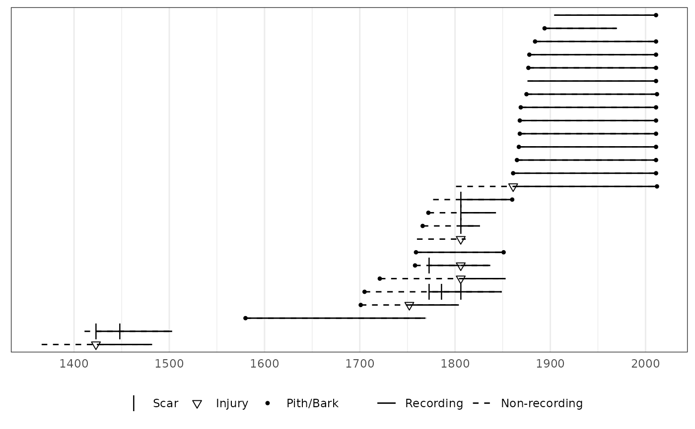
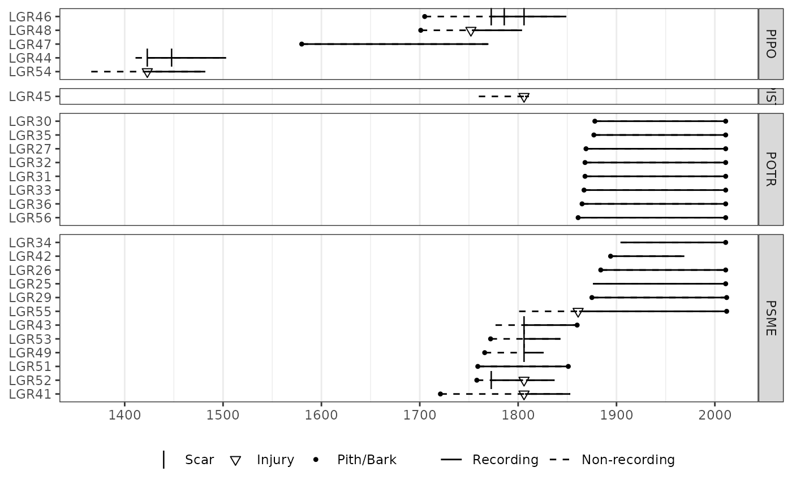

Create an ggplot2 object for plotting fhx demographics
plot_demograph( x, color_group, color_id, facet_group, facet_id, facet_type = "grid", ylabels = TRUE, yearlims = FALSE, composite_rug = FALSE, filter_prop = 0.25, filter_min_rec = 2, filter_min_events = 1, injury_event = FALSE, plot_legend = FALSE, event_size = c(Scar = 4, Injury = 2, `Pith/Bark` = 1.5), rugbuffer_size = 2, rugdivide_pos = 2 )
| x | An |
|---|---|
| color_group | Option to plot series with colors. This is a character
vector or factor which corresponds to the series names given in
|
| color_id | Option to plot series with colors. A character vector of
series names corresponding to groups given in |
| facet_group | Option to plot series with faceted by a factor. A vector
of factors or character vector which corresponds to the series names given
in |
| facet_id | Option to plot series with faceted by a factor. A vector of
series names corresponding to species names given in |
| facet_type | Type of ggplot2 facet to use, if faceting. Must be
either "grid" or "wrap". Default is "grid". Note that |
| ylabels | Optional boolean to remove y-axis (series name) labels and tick marks. Default is TRUE. |
| yearlims | Option to limit the plot to a range of years. This is a
vector with two integers. The first integer gives the lower year for the
range while the second integer gives the upper year. The default is to
plot the full range of data given by |
| composite_rug | A boolean option to plot a rug on the bottom of the
plot. Default is FALSE. Note that |
| filter_prop | The minimum proportion of fire events in recording series needed for fire event to be considered for composite. Default is 0.25. |
| filter_min_rec | The minimum number of recording series needed for a fire event to be considered for the composite. Default is 2 recording series. |
| filter_min_events | The minimum number of fire scars needed for a fire
event to be considered for the composite. Default is 1. Fire injuries are
included in this count if |
| injury_event | Boolean indicating whether injuries should be considered
events. Default is |
| plot_legend | A boolean option allowing the user to choose whether a
legend is included in the plot or not. Default is |
| event_size | An optional numeric vector that adjusts the size of fire
event symbols on the plot. Default is
|
| rugbuffer_size | An optional integer. If the user plots a rug, this controls the amount of buffer whitespace along the y-axis between the rug and the main plot. Must be >= 2. |
| rugdivide_pos | Optional integer if plotting a rug. Adjust the placement of the rug divider along the y-axis. Default is 2. |
A ggplot object for plotting or manipulation.
data(lgr2_meta) # With color showing species. plot(lgr2, color_group = lgr2_meta$SpeciesID, color_id = lgr2_meta$TreeID, plot_legend = TRUE )# With facets for each species. plot(lgr2, facet_group = lgr2_meta$SpeciesID, facet_id = lgr2_meta$TreeID, plot_legend = TRUE )# Append annotation onto a ggplot object. require(ggplot2) p <- plot_demograph(lgr2, color_group = lgr2_meta$SpeciesID, color_id = lgr2_meta$TreeID ) # Add transparent box as annotation to plot. p + annotate("rect", xmin = 1750, xmax = 1805, ymin = 3.5, ymax = 13.5, alpha = 0.2 )